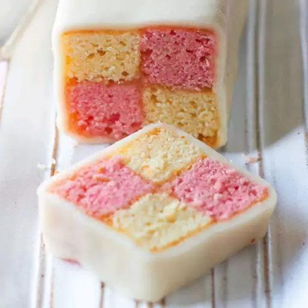

Battenberg Cake

Description
This fancy almond-flavored tea cake, also called
'Battenberg/Battenburg Cake' or 'Battenberg/Battenburg
Square' features a homemade marzipan.
Have a British Tea party? Don't worry you really will
like this cake!
Ingredients
- 1 cup butter, softened
- 1 cup white sugar
- 3 eggs
- ¼ teaspoon vanilla extract
- 2 cups all-purpose flour
- 1 teaspoon baking powder
- ⅛ teaspoon salt
- 2 drops red food coloring
- 1 cup apricot preserves
- 2 cups ground almonds
- 3 cups confectioners' sugar
- 1 egg, room temperature
- 1 ½ teaspoons lemon juice
- ¼ teaspoon almond extract
Steps
- Cream butter and 1 cup sugar together. Beat in 3 eggs, one at a time. Mix in vanilla. Stir in flour, baking
powder and salt gently. Add milk if needed.
- Divide batter into 2 equal parts. Add food coloring to 1 part to make a deep pink color. Grease two 7 inch
square pans. Spread batters into pans.
- Bake at 175 degrees C (350 degrees F) until an inserted wooden pick comes out clean, about 25 to 30 minutes.
Let stand in pans 5 minutes. Turn out on racks to cool.
- Trim edges from both cakes. Cut each cake lengthwise into 4 strips as wide as the cake is thick. Trim to
make strips match. Heat jam slightly. Spread on sides to glue 2 pink and 2 white strips together
checkerboard fashion. Spread all 4 sides of completed cake with jam. Repeat with remaining pink and white
stripes. Makes two cakes.
- To Make Almond Paste: Mix almonds, confectioners' sugar, egg, lemon juice, and almond extract together.
Knead until smooth, adding a bit of lemon juice or water if too dry to roll. Add only 1/2 teaspoon at a
time. It will be stiff. Divide into 2 equal parts.
- Roll 1/2 of paste 1/8 inch or so thick on a surface lightly dusted with confectioners' sugar. Cut to fit
length of cake, and long enough to cover 4 sides leaving ends uncovered. Lay cake on one end of paste. Wrap
to completely enclose all 4 sides of cake pinching paste to seal. Roll in granulated sugar. Place with seal
underneath on serving plate, or store in plastic bag. Repeat for second cake. Chill. Slice thinly to serve.